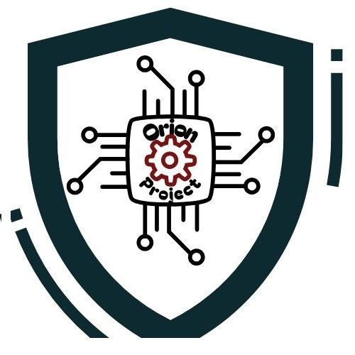
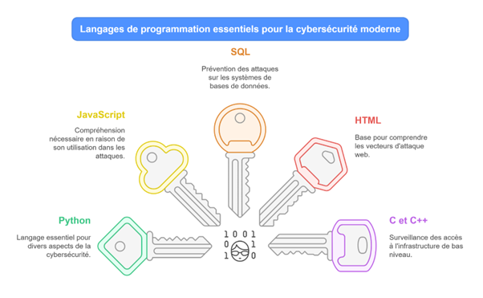

Galerie du projet
Voici le design du logo de notre projet

Notre équipe se réunit autour d'un logo, celui ci-dessus !

Voici les principaux langages que nous apprenons pour pratiquer la CyberSécurité.
Protégez votre entreprise contre les menaces numériques !
Bienvenue | A propos de l'équipe Orion | Galerie | Services | Acteurs du projet | Formations | Infos programmation |
Notre équipe de Cyber combattants essaie de lutter tant bien que mal contre les cyber attaques. Nous utilisons le Java, le C++, nous avons un combattant spécialisé en Python 3 et des connaissances en HTML 5 !
Voici le design du logo de notre projet
Notre équipe se réunit autour d'un logo, celui ci-dessus !
Voici les principaux langages que nous apprenons pour pratiquer la CyberSécurité.
Notre équipe de Cyber combattants essaie une évaluation complète de la sécurité de vos systèmes d'information afin d'identifier les vulnérabilités et proposer des solutions adaptées.
Notre équipe consulte aussi pour donner des conseils aux gens pour se protéger lorsqu'ils naviguent dans l'Internet. Nous leur proposons des solutions pour qu'ils aient le plus de chance possible d'être en toute sécurité sur le web.
Sensibilisation et formation de vos équipes aux bonnes pratiques de cybersécurité pour réduire les risques internes et améliorer la culture de la sécurité.
Mise en place de solutions de chiffrement et de gestion des accès pour protéger les informations sensibles et garantir la conformité aux réglementations.
Assistance en cas d'incident de sécurité avec des processus d'intervention pour limiter les dommages et restaurer les services affectés.
Grâce à l'expertise de ce consultant, nous avons pu apprendre de nouvelles manière de contrer les cyber-attaques. Il sait faire de JavaScript et du C++.
Les formations en cybersécurité ont été extrêmement bénéfiques pour nos équipes. Nous nous sentons beaucoup plus confiants face aux menaces actuelles. C'est notre responsable en Python à qui nous avons assigné la charge de former les nouvelles recrues. Un travail difficile qu'il exécute très aisément !
Ce consultant s'est spécialisé dans le code HTML 5 pour vérifier les failles d'une page web. Il praitque le JavaScript, le CSS et un peu le Python 3 ! C'est lui qui est en charge de l'entretien de la page web !
Cela ne fait pas longtemps que nous avons accueilli dans notre équipe, une nouvelle recrue, Flavio M. Il est ici pour se former à des langages de programmation basiques et aux relations intérieurs et extérieurs. Il est fasciné par ce qu'il fait. Vous aussi, venez nous rejoindre !
Nous avons aussi recruté Mathieu M, désireux d'apprendre à se former à la programmation. Il s'initie au Python et fait de la communication. Il aime toujours en savoir plus. Venez avec nous vous former aux langages de programmation!
Python est un langage de programmation interprété, multiparadigme et multiplateformes. Il favorise la programmation impérative structurée, fonctionnelle et orientée objet. Il est doté d'un typage dynamique fort, d'une gestion automatique de la mémoire par ramasse-miettes et d'un système de gestion d'exceptions ; il est ainsi similaire à Perl, Ruby, Scheme, Smalltalk et Tcl. Nous sommes aujourd'hui à la troisième version de Python. Nous utilisons Python pour différents aspects clés de de la CyberSécurité.
Petite information : Ne pas utiliser le Python 2, car, certaines fonctions sont défectueuses.
Pour plus d'info, vous pouvez consulter le site :
Wikipedia: Python
C++ est un langage de programmation qui est l'un des plus utilisé de nos jours. Il est compilé. Pour écrire un tel programme, il faut commencer par écrire un ou plusieurs fichiers source. Ensuite, il faut compiler ces fichiers source grâce à un programme appelé compilateur afin d'obtenir un programme exécutable. Cette phase s'appelle la compilation. Les fichiers source sont des fichiers texte lisibles dont le nom se termine en général par .c, .cpp ou .h. Les fichiers exécutables portent en général l'extension .exe sous windows et ne portent pas d'extension sous Linux. Il existe de très nombreux compilateurs : on peut citer par exemple Visual C++ (de microsoft), C++ Builder (de Borland), ou encore gcc qui est un excellent compilateur libre. Le langage C est un langage de programmation inventé par MM. Kernighan et Ritchie au début des années 70. Au début des années 90, Bjarne Stroustrup fait évoluer le langage vers le langage C++ en lui rajoutant notamment les notions orientées objet. Toutefois, bien que le C++ ait évolué à partir du C, et ait gardé un grand nombre de notions et de syntaxes de son «ancêtre», il s'agit de deux langages différents ! Vous pouez consulter le site : Wikipedia.org:C%2B%2B
Le HTML ou Hyper Text Markup Language de son vrai nom est un langage de programmation dit "Balise". Il sert à éditer des pages web. Il en est actuellement à sa 5ème version. Cette page web est crée en HTML. En cybersécurité, il sert à trouver les failles dans une page web. Ce n'est pas un langage de programmation ! Mais, des langages de programmation tels que le PHP ou le Python peuvent créer des pages web en générant du HTML. Vous pouvez consulter la page wikipedia : Wikipedia: HTML5
JavaScript est un langage de programmation utilisé principalement pour rendre les pages web interactives. Il est exécuté côté client (dans le navigateur web), mais il peut aussi être exécuté côté serveur (par exemple, avec Node.js). Voici quelques concepts clés à connaître :
PHP est un langage de script HTML exécuté du côté du serveur. Il veut dire « PHP : Hypertext Preprocessor ». Sa syntaxe est largement inspirée du langage C, de Java et de Perl, avec des améliorations spécifiques. Le but du langage est d'écrire rapidement des pages HTML dynamiques. Une page php porte l'extension « .php ». Une page PHP peut être entièrement programmée en PHP ou mélangée avec du code html. PHP est un langage « Embedded HTML », c'est à dire qu'il apparaît à n'importe quel endroit de la page HTML. Pour ça on le place dans des balises particulières : . On peut aussi utiliser les balises . La première forme est préférable pour plus de simplicité et une compatibilité XHTML. On écrit donc une page HTML dans laquelle on intègre du code PHP. Pour plus d'info, consulter le site : Wikipedia: PHP
Le Java c'est :
Si vous vous intérressez à la programmation, vous pouvez consulter le portail de la programmation : Wikipedia: Programmation_informatique